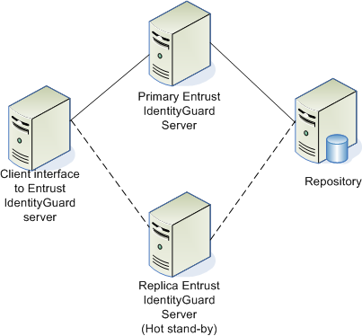
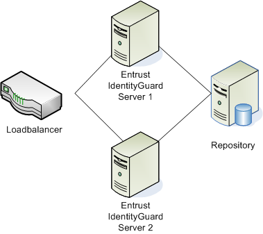

|
IdentityGuard Server 13.0 Administration Guide |
|
IdentityGuard Server 13.0 Administration Guide |
You can set up multiple Entrust IdentityGuard servers to operate in load-balanced mode, or you can set up a separate Entrust IdentityGuard server as a hot-standby in case the primary server becomes unavailable.
Hot-standby scenario
The following illustration shows the hot-standby scenario. The solid line shows the primary connection, while the dotted line shows the hot-standby connection. The Client APIs available with Entrust IdentityGuard server include the ability to fail over to a hot standby server.

Load-balanced scenario
The following illustration shows the load-balanced scenario. A load-balancer is placed in front of the Entrust IdentityGuard servers to distribute the load.
